Lab 6: Orientation Control
Lab 6
Goals
-
The goal of this lab is to achieve a PID based closed-loop orientation control on IMU for the robot.
Prelab
Prelab
For Lab 6, I extended the BLE debugging framework from lab 5 . The Artemis board used one RX string characteristic to receive commands and one TX string characteristic to return responses and logged data.
The BLE command interface was organized through handle_command(). Commands were used to calibrate gyro bias, reset yaw, update PID gains, start a control run, request the logged results, and enable or disable anti-windup.
During each run, the robot stored yaw, error, angular velocity, PID terms, and PWM command in onboard buffers. The data was then sent back over BLE in CSV format after the run, which was later used to generate the plots in the report.
BLE Characteristic Setup
BLEService testService(BLE_UUID_TEST_SERVICE);
BLECStringCharacteristic rx_characteristic_string(
BLE_UUID_RX_STRING, BLEWrite, MAX_MSG_SIZE);
BLECStringCharacteristic tx_characteristic_string(
BLE_UUID_TX_STRING, BLERead | BLENotify, MAX_MSG_SIZE);
The BLE interface uses one RX characteristic to receive experiment commands and one TX characteristic to return responses and logged data.
Command Definitions
enum CommandTypes
{
CALIB_GYRO_BIAS = 20,
RESET_YAW = 24,
SET_YAW_PID_GAINS = 31,
START_YAW_PID_CTRL = 32,
SEND_YAW_PID_LOG = 33,
SET_ANTI_WINDUP = 34
};
These commands supported the full Lab 6 workflow: calibration, yaw reset, gain update, closed-loop control, log transfer, and anti-windup switching.
Command Parsing
void handle_command()
{
robot_cmd.set_cmd_string(rx_characteristic_string.value(),
rx_characteristic_string.valueLength());
bool success;
int cmd_type = -1;
success = robot_cmd.get_command_type(cmd_type);
if (!success) return;
switch (cmd_type) {
case CALIB_GYRO_BIAS: {
calibrate_gyro_bias();
break;
}
case RESET_YAW: {
reset_yaw_state();
break;
}
case SET_YAW_PID_GAINS: {
// parse kp, ki, kd
break;
}
case START_YAW_PID_CTRL: {
// start closed-loop control run
break;
}
case SEND_YAW_PID_LOG: {
send_yaw_pid_log_csv();
break;
}
}
}
All incoming BLE messages were parsed by a centralized command handler, so the experiment could be controlled directly from the laptop without reflashing the board between trials.
Buffered Data Logging
static void yaw_append_log(unsigned long t_rel_ms)
{
if (yaw_log_len >= YAW_LOG_BUF_SIZE) return;
yaw_t_ms_buf[yaw_log_len] = t_rel_ms;
yaw_target_buf[yaw_log_len] = yaw_target_deg;
yaw_meas_buf[yaw_log_len] = yaw_deg;
yaw_err_buf[yaw_log_len] = yaw_error_deg;
yaw_gz_buf[yaw_log_len] = gyro_z_corr_dps;
yaw_p_buf[yaw_log_len] = P_term;
yaw_i_buf[yaw_log_len] = I_term;
yaw_d_buf[yaw_log_len] = D_term;
yaw_u_buf[yaw_log_len] = control_u;
yaw_pwm_buf[yaw_log_len] = pwm_cmd_signed;
yaw_log_len++;
}
Instead of transmitting every sample during control, the robot first stored the data in arrays. This reduced BLE overhead and kept the control loop more consistent.
CSV Log Transfer
static void send_yaw_pid_log_csv()
{
int n = yaw_log_len;
tx_characteristic_string.writeValue(
"time_ms,target_deg,yaw_deg,error_deg,gz_corr_dps,p_term,i_term,d_term,u,pwm_signed"
);
for (int i = 0; i < n; i++)
{
char msg[MAX_MSG_SIZE];
snprintf(msg, sizeof(msg),
"%lu,%.6f,%.6f,%.6f,%.6f,%.6f,%.6f,%.6f,%.6f,%d",
yaw_t_ms_buf[i],
yaw_target_buf[i],
yaw_meas_buf[i],
yaw_err_buf[i],
yaw_gz_buf[i],
yaw_p_buf[i],
yaw_i_buf[i],
yaw_d_buf[i],
yaw_u_buf[i],
yaw_pwm_buf[i]);
tx_characteristic_string.writeValue(msg);
BLE.poll();
delay(12);
}
send_end_marker();
}
After the run, the buffered data was sent back over BLE in CSV format and used to generate the response plots in the report.
Lab Tasks
Task 1: Gyro Bias Calibration
Before estimating yaw from the IMU, I first calibrated the gyroscope z-axis bias while keeping the robot still. This step was necessary because even a small constant offset in the gyro reading would accumulate after integration and cause yaw drift.
To compute the bias, the robot collected multiple stationary gyroscope z-axis samples and
averaged them. The resulting value was stored as gyro_z_bias_dps and later
subtracted from the raw gyroscope measurement before yaw integration.
In this trial, the measured gyro z-axis bias was about 0.507825 dps. This confirmed
that a nonzero bias existed and that calibration was required before running the orientation
controller.
Gyro Bias Calibration Code
static void calibrate_gyro_bias()
{
Serial.println("Calibrating gyro z bias... keep robot still.");
float sum_gz = 0.0f;
int valid_count = 0;
while (valid_count < GYRO_BIAS_SAMPLES)
{
BLE.poll();
float gz;
if (imu_read_gyro_z(gz))
{
sum_gz += gz;
valid_count++;
}
delay(5);
}
gyro_z_bias_dps = sum_gz / (float)valid_count;
reset_yaw_state();
Serial.print("Gyro z bias = ");
Serial.print(gyro_z_bias_dps, 6);
Serial.println(" dps");
}
After calibration, the corrected angular velocity used for yaw estimation was computed as the raw gyro z-axis reading minus the measured bias. This bias-compensated signal was then integrated in the following steps of the lab.
To further verify the calibration step, I repeated the gyro bias measurement three times while the robot was stationary. After each calibration, I reset the yaw reference and checked that the board consistently returned a small but nonzero z-axis bias value.
Repeated Calibration Output
Calibrating gyro z bias... keep robot still.
Gyro z bias = 0.425153 dps
Calibrating gyro z bias... keep robot still.
Gyro z bias = 0.507825 dps
Calibrating gyro z bias... keep robot still.
Gyro z bias = 0.269428 dps
Yaw reset
These repeated trials show that the gyro z-axis bias was not exactly constant from run to run, but remained within the same small range. This confirms that bias calibration should be performed before each experiment, since even a small offset can accumulate over time after integration and produce noticeable yaw drift.
Task 2: Open-Loop Turning Characterization
Before implementing closed-loop yaw control, I first tested the robot in open loop to verify that it could rotate in place reliably. The goal of this step was to confirm the turning direction convention and to determine whether a given PWM command was large enough to overcome floor friction.
I sent fixed motor commands over BLE and observed the robot response on the floor. These tests showed that the wheels could spin at low PWM values, but the robot did not always rotate in place unless the command was large enough. This step was useful for identifying the practical turning range before starting controller tuning.
In addition, the open-loop tests established the command-direction relationship used later in the controller. For my robot, the two signed turning commands produced repeatable left and right in-place rotations, which confirmed that the motor mapping was correct before moving to closed-loop experiments.
Python Command Snippets
# right turn test
ble.write("9750f60b-9c9c-4158-b620-02ec9521cd99", b"17:80")
# left turn test
ble.write("9750f60b-9c9c-4158-b620-02ec9521cd99", b"18:80")
# brake
ble.write("9750f60b-9c9c-4158-b620-02ec9521cd99", b"19")
These commands were used to apply fixed open-loop motor inputs and directly observe the robot's turning behavior. This provided a simple way to test direction, turning feasibility, and the minimum usable PWM before closed-loop control was introduced.
The two turning videos confirmed that the robot could produce repeatable in-place motion in both directions, which was necessary before implementing yaw regulation.
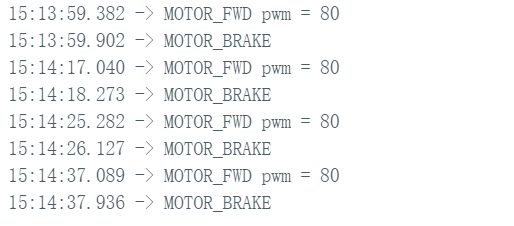
Figure 4 shows the serial monitor output during repeated open-loop tests at PWM = 80. The robot accepted the forward-turn command and brake command correctly in multiple trials, which confirmed that the BLE interface and motor actuation path were functioning as expected.
Although these low-PWM tests were useful for checking direction and command flow, later tuning showed that a larger PWM was needed for reliable turning on the floor. Therefore, the open-loop characterization in this section served mainly as a baseline verification step for the later closed-loop orientation controller.
Task 3: P Control Design and Tuning
After verifying the IMU calibration and open-loop turning behavior, I next implemented a proportional yaw controller. The goal of this step was to rotate the robot to a desired target angle using the IMU-estimated yaw as feedback.
For P control, the yaw error was defined as the difference between the target yaw and the current measured yaw. The control signal was then computed using only the proportional term, so larger yaw error produced a larger turning command. In practice, this meant the robot turned quickly when far from the target and slowed down as it approached the setpoint.
I tested several proportional gains and observed the resulting rise time, overshoot, and steady-state behavior. Smaller gains produced slower responses, while larger gains increased the initial turning speed but could also make the motion less smooth. The final gain used here was chosen as a compromise between response speed and stability under a fully charged battery.
Python Commands for P Control
# P control test
ble.write("9750f60b-9c9c-4158-b620-02ec9521cd99", b"30:2.7")
ble.write("9750f60b-9c9c-4158-b620-02ec9521cd99", b"27:3000:20:30")
ble.write("9750f60b-9c9c-4158-b620-02ec9521cd99", b"29")
The commands above were used to set the proportional gain, start the yaw control run, and request the logged data after the experiment. This made it easy to repeat the same test with different gain values during tuning.
P Control Core Logic
yaw_error_deg = wrap_angle_deg(yaw_target_deg - yaw_deg);
// stop band
if (fabs(yaw_error_deg) <= STOP_BAND_DEG)
{
pwm_cmd_signed = 0;
motor_active_brake();
return;
}
// P
P_term = Kp_yaw * yaw_error_deg;
control_u = P_term;
int pwm = PWM_TURN_MIN + (int)fabs(control_u);
if (pwm > PWM_TURN_MAX) pwm = PWM_TURN_MAX;
if (control_u > 0)
{
pwm_cmd_signed = pwm;
}
else
{
pwm_cmd_signed = -pwm;
}
apply_turn_control(pwm_cmd_signed);
This proportional controller used the yaw error directly to generate the signed turning command. A stop band was also included so that the motors would stop once the robot was sufficiently close to the target angle.
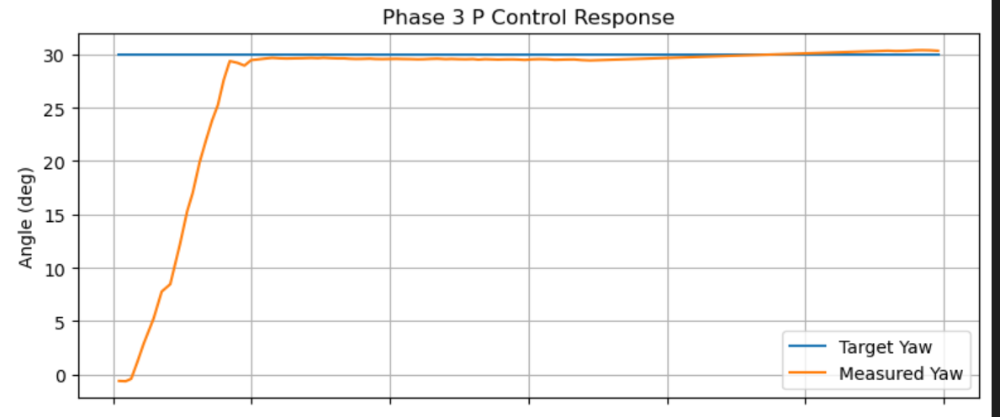
Figure 3 shows the target yaw and measured yaw during the P control experiment. The robot rotated quickly toward the 30° target and settled near the desired angle, demonstrating that proportional feedback alone was already sufficient for stable single-angle orientation control.
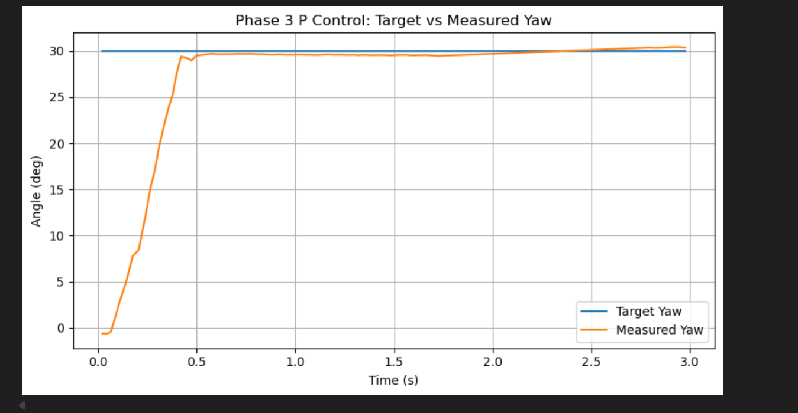
Figure 4 shows another representative P-control result. The measured yaw again approached the target quickly and remained close to the setpoint, showing that the controller behavior was repeatable across runs.
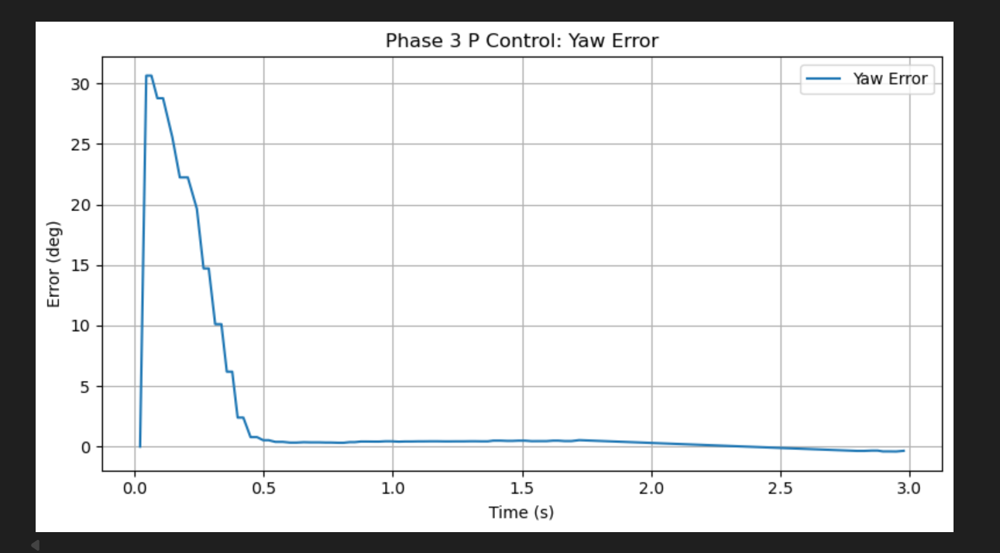
Figure 5 shows that the yaw error decreased rapidly from the initial condition and converged to a small value near the target. This confirmed that the chosen proportional gain produced a fast and well-damped response.
Overall, the proportional controller already provided good performance for this task. It served as the baseline controller before extending the implementation to include derivative and integral terms in the later PID experiments.
Task 4: PID Controller Implementation
After establishing a good proportional baseline, I next extended the controller to a full PID framework. In this stage, I added both an integral term and a derivative term so that the controller could respond not only to the current yaw error, but also to accumulated error and the measured angular velocity.
For this experiment, I used Kp = 2.7, Ki = 0.01, and
Kd = 0.18, with anti-windup disabled. The yaw error was defined as the difference
between the target yaw and the measured yaw, while the derivative term was computed from the
corrected gyro z-axis reading. The integral term was included to help reduce the remaining
steady-state error after the robot approached the target.
Compared with pure P control, the PID framework provided a more complete controller structure. The proportional term still dominated the initial response, while the derivative term helped make the final approach less aggressive. The small integral gain allowed the controller to gradually compensate for residual error near the target.
Python Commands for PID Test
ble.write("9750f60b-9c9c-4158-b620-02ec9521cd99", b"20")
ble.write("9750f60b-9c9c-4158-b620-02ec9521cd99", b"24")
ble.write("9750f60b-9c9c-4158-b620-02ec9521cd99", b"34:0")
ble.write("9750f60b-9c9c-4158-b620-02ec9521cd99", b"31:2.7:0.01:0.18")
ble.write("9750f60b-9c9c-4158-b620-02ec9521cd99", b"32:3000:20:30")
ble.write("9750f60b-9c9c-4158-b620-02ec9521cd99", b"33")
The commands above were used to calibrate the gyro bias, reset yaw, disable anti-windup, set the PID gains, run the controller, and export the logged data after the experiment.
PID Control Core Logic
yaw_error_deg = wrap_angle_deg(yaw_target_deg - yaw_deg);
// stop band
if (fabs(yaw_error_deg) <= STOP_BAND_DEG)
{
pwm_cmd_signed = 0;
motor_active_brake();
return;
}
// P
P_term = Kp_yaw * yaw_error_deg;
// I
error_integral += yaw_error_deg * dt_i;
if (error_integral > YAW_INTEGRAL_MAX) error_integral = YAW_INTEGRAL_MAX;
if (error_integral < -YAW_INTEGRAL_MAX) error_integral = -YAW_INTEGRAL_MAX;
I_term = Ki_yaw * error_integral;
// D term on measurement
D_term = -Kd_yaw * gyro_z_corr_dps;
control_u = P_term + I_term + D_term;
The controller combines proportional, integral, and derivative action into a single control signal. The proportional term reacts to the current yaw error, the integral term accumulates past error to reduce steady-state offset, and the derivative term damps the motion using the measured angular velocity.
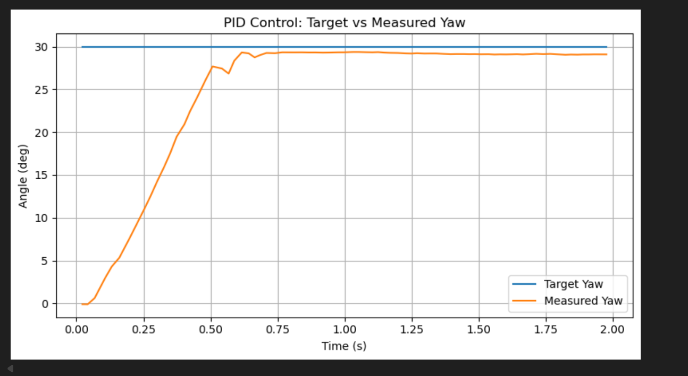
Figure 6 shows the target yaw and measured yaw under PID control. The robot approached the 30° target quickly and then settled near the setpoint with a relatively smooth final approach.
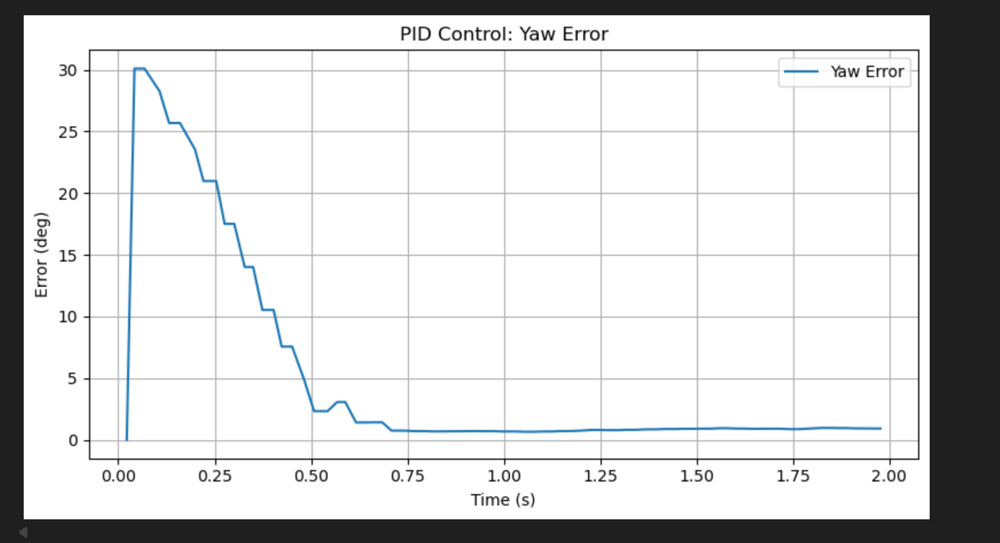
Figure 7 shows that the yaw error decreased rapidly from its initial value and converged to a small remaining error. This indicates that the controller was able to regulate the orientation stably while keeping the final offset relatively small.
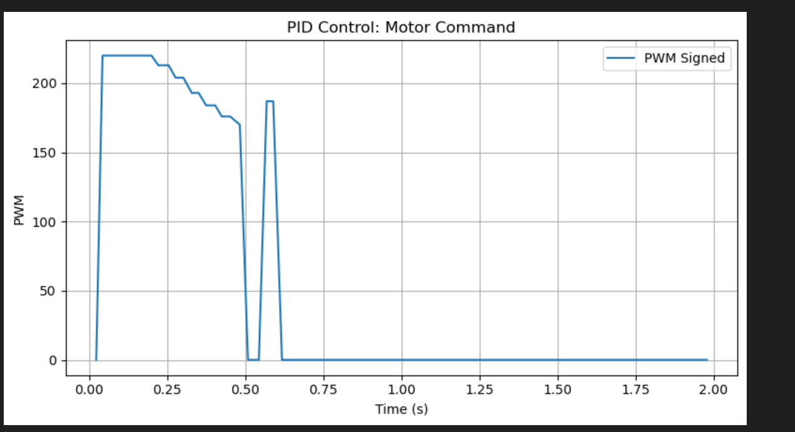
Figure 8 shows the signed motor command during the run. The PWM was initially large to rotate the robot toward the target and then decreased as the yaw error became smaller, which is consistent with the desired closed-loop behavior.
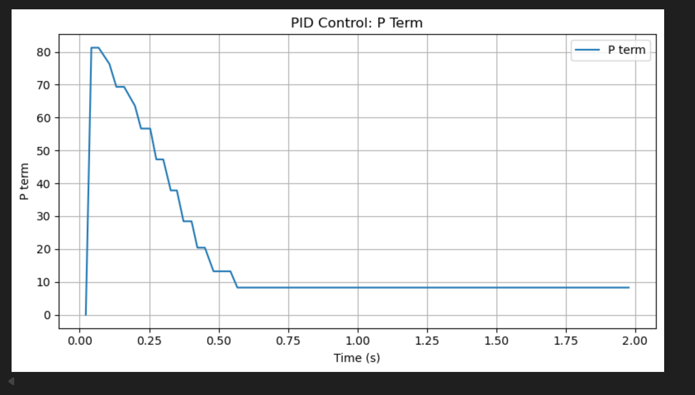
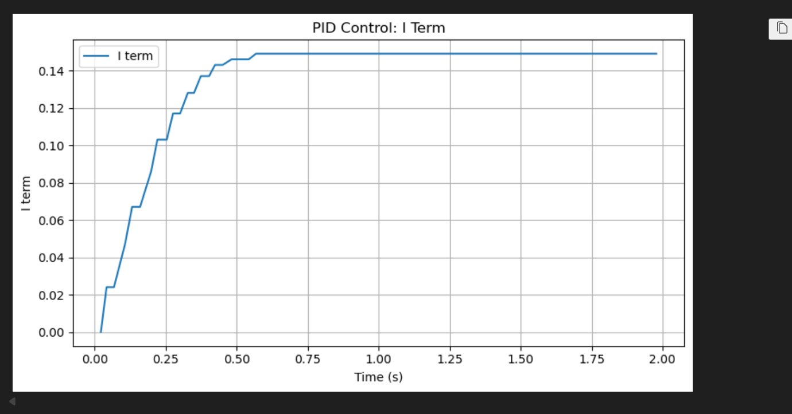
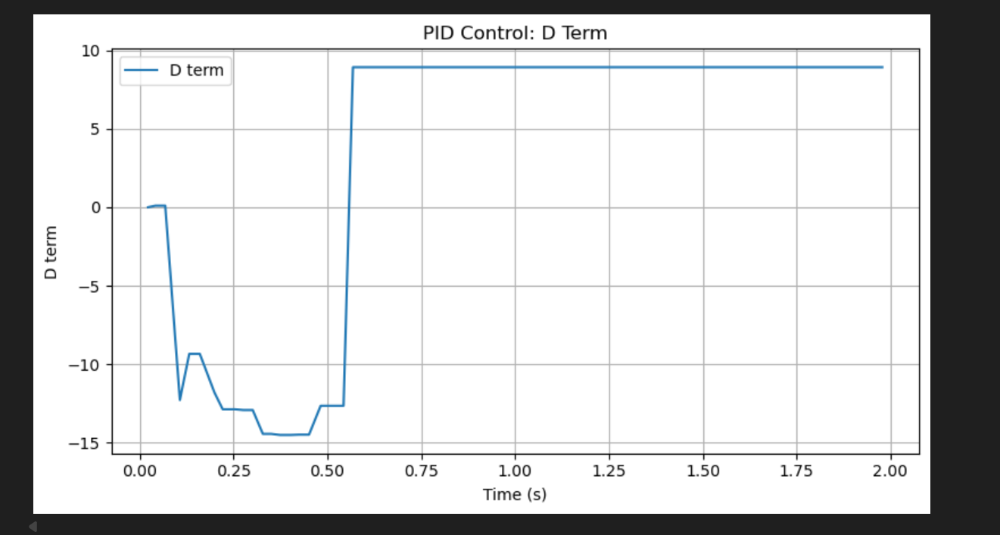
Figures 9–11 show the individual controller terms. The proportional term dominated the
early part of the response because the initial yaw error was large. The integral term remained
small but nonzero because Ki = 0.01, so it gradually accumulated to help reduce the
remaining offset. The derivative term provided damping based on the measured angular velocity and
helped make the response smoother near the target.
Task 5: Anti-Windup Implementation(5000 level)
For the final 5000-level experiment, I enabled anti-windup in the PID controller and compared the result with the previous run without anti-windup. The purpose of this step was to limit excessive integral accumulation and observe how this affected the overall control output.
In my implementation, anti-windup was switched through the BLE command interface. The previous PID
test used 34:0, which disabled anti-windup. To enable it, I changed the command to
34:1 before starting the same PID run.
Anti-Windup Command
# anti-windup OFF
ble.write("9750f60b-9c9c-4158-b620-02ec9521cd99", b"34:0")
# anti-windup ON
ble.write("9750f60b-9c9c-4158-b620-02ec9521cd99", b"34:1")
This command simply changed the controller from the normal PID mode to the anti-windup version without modifying the rest of the test procedure.
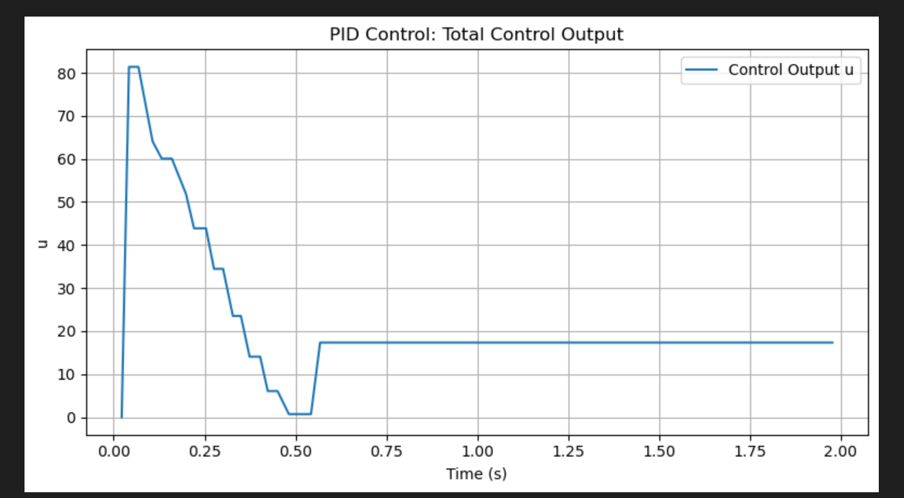
Figure 12 shows the total control output in the normal PID run. The control signal decreased over time, but the transition near the middle of the response was less smooth.
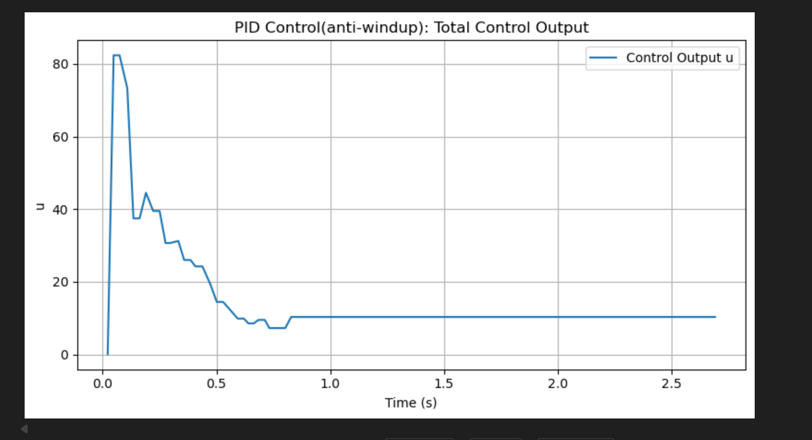
Figure 13 shows the total control output after enabling anti-windup. Compared with the previous case, the control signal became smoother and more gradual, especially during the transition toward the lower-output region.
From this comparison, I conclude that anti-windup improved the controller behavior by making the response smoother. By limiting excessive integral accumulation, the controller avoided a more abrupt change in control output and produced a more controlled recovery near the target.
Appendix
1. An announcement of AI usage
I used AI tools to support parts of this lab, mainly for webpage/HTML formatting, minor code edits and debugging, and polishing the written explanations for clarity and conciseness. Throughout the assignment, I verified the suggestions against the lab requirements, tested changes on my own setup, and made final design and implementation decisions independently based on my own understanding.